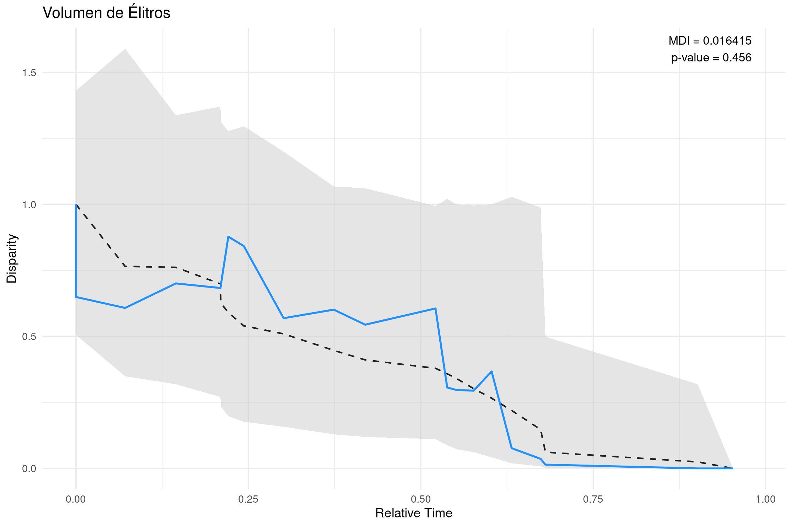
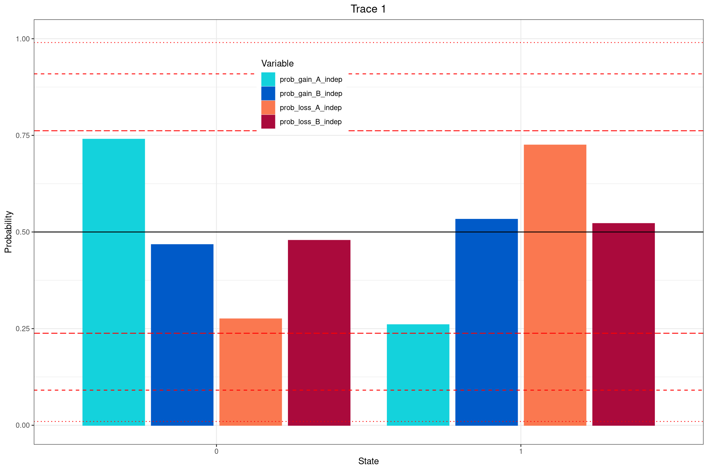

Haz clic en la imagen para ver el PDF de la presentación
Análisis de Disparity-Through-Time (DTT) con geiger en R
En biología evolutiva, el término disparidad describe la variación morfológica o funcional entre especies dentro de un clado. A diferencia de la diversidad taxonómica (cuántas especies hay), la disparidad nos dice cuán distintas son las especies entre sí en cuanto a rasgos cuantitativos.
El análisis de Disparity-Through-Time (DTT) permite rastrear cómo esta disparidad ha cambiado a lo largo de la historia evolutiva de un grupo. Es una herramienta útil para identificar patrones como radiaciones adaptativas (alta disparidad al inicio) o conservadurismo morfológico (baja disparidad durante la evolución).
El paquete geiger en R ofrece la función dtt() para realizar este tipo de análisis comparando la trayectoria empírica de la disparidad con simulaciones bajo un modelo de evolución neutral (modelo Browniano, por defecto).
¿Qué hace la función dtt()?
La función dtt() toma un árbol filogenético y una matriz de rasgos cuantitativos, y calcula:
La disparidad promedio en diferentes puntos del tiempo evolutivo.
Un conjunto de simulaciones bajo evolución Browniana para comparar con los datos reales.
El índice MDI (Morphological Disparity Index), que resume si la disparidad observada es mayor o menor que la esperada bajo el modelo nulo.
¿Qué devuelve dtt()?
La función dtt() retorna una lista con los siguientes elementos:
dtt: Disparidad promedio para los clados.
times: Tiempos correspondientes a cada valor de disparidad en el análisis DTT.
sim: Valores de disparidad a lo largo del tiempo para cada uno de los datasets simulados bajo el modelo nulo.
MDI: Valor del Morphological Disparity Index, que corresponde al área entre la curva DTT empírica y la mediana de las curvas simuladas.
Descarga del Árbol Filogenético y la matriz de caracteres continuos
📥 Puedes descargar el archivo .tre con el árbol en el siguiente enlace:
Guarda los archivos en la carpeta correspondiente y verifica su ubicación antes de continuar.
# --------------------------------------# Análisis Disparity-Through-Time (DTT)# Variable: Volumen de Élitros# --------------------------------------# 📦 Cargar paquetes necesarioslibrary(geiger) # para el análisis DTTlibrary(ape) # para leer árboles filogenéticos en formato NEXUSlibrary(ggplot2) # para graficar con estilo profesionallibrary(dplyr) # para manipulación de datoslibrary(tidyr) # para transformación de datos en formato largo# 🌳 Leer el árbol filogenético en formato NEXUStree <-read.nexus("../docs/u3_PatMorph/subarbol_ingroup_morph.nex")# 📊 Leer la matriz de rasgos continuos (NEXUS como tabla de texto)data_df <-read.table("../docs/u3_PatMorph/med_geiger.nex", skip =6, # omitir cabecera hasta el bloque MATRIXnrows =21, # número de taxonesfill =TRUE, stringsAsFactors =FALSE)# 🏷️ Asignar nombres a las columnas de la matrizcolnames(data_df) <-c("taxa", "v_elitros", "v_abdomen", "amplitud", "convexidad")# 🧬 Extraer la variable 'v_elitros' y asignar nombresv_elitros <- data_df$v_elitrosnames(v_elitros) <- data_df$taxa# 🧪 Ejecutar análisis DTT con 1000 simulaciones bajo evolución Brownianadtt_v_elitros <- geiger::dtt( tree, v_elitros,calculateMDIp =TRUE, # calcula el p-valor empíricoplot=FALSE,mdi.range =c(0, 1), # usa toda la profundidad del árbolnsim =1000# número de simulaciones)# 📉 Extraer resultados del análisismdi_val <-as.numeric(dtt_v_elitros$MDI) # valor del índice MDIp_val <- dtt_v_elitros$MDIp # p-valor empíricoempirical <- dtt_v_elitros$dtt # curva de disparidad observadasim_df <-as.data.frame(dtt_v_elitros$sim) # disparidad simuladasim_df$time <- dtt_v_elitros$times # tiempos de ramificación# 🔄 Reorganizar las simulaciones a formato largo (long format)sim_df_long <- sim_df %>%pivot_longer(cols =-time, names_to ="rep", values_to ="disparity") %>%mutate(type ="Simulated")# 🔵 Crear data frame para la curva observadaemp_df <-data.frame(time = dtt_v_elitros$times,disparity = dtt_v_elitros$dtt,type ="Empirical")# 📊 Calcular resumen estadístico de las simulaciones (mediana y percentiles)summary_df <- sim_df %>%pivot_longer(cols =-time, names_to ="rep", values_to ="disparity") %>%group_by(time) %>%summarise(median =median(disparity),lower =quantile(disparity, 0.025),upper =quantile(disparity, 0.975) )# 📈 Graficar resultado del análisis DTT con ggplot2ggplot() +# Sombreado gris para el intervalo de simulaciones (2.5% - 97.5%)geom_ribbon(data = summary_df, aes(x = time, ymin = lower, ymax = upper),fill ="gray80", alpha =0.5) +# Línea discontinua: mediana de simulacionesgeom_line(data = summary_df, aes(x = time, y = median),linetype ="dashed", color ="gray12", size =0.8) +# Línea azul sólida: trayectoria empírica de disparidadgeom_line(data = emp_df, aes(x = time, y = disparity),color ="dodgerblue", size =1) +# 🧾 Texto con valores de MDI y p-value en la esquina superior derechaannotate("text",x =0.98,y =max(summary_df$upper, na.rm =TRUE),hjust =1,label =paste0("MDI = ", round(mdi_val, 6), "\n","p-value = ", signif(p_val, 3) ),size =4.5) +# Títulos y etiquetas de ejeslabs(title ="Volumen de Élitros",x ="Relative Time", y ="Disparity" ) +theme_minimal(base_size =14) # Tema limpio y legible

🔎 dtt_res$MDI: Morphological Disparity Index ¿Qué es? Es un índice resumen que mide cuán diferente es la trayectoria de disparidad observada a lo largo del tiempo en comparación con lo que esperaríamos bajo un modelo nulo de evolución (típicamente, modelo Browniano).
¿Cómo se interpreta? Esencialmente, mide el área entre la curva empírica de disparidad y la mediana de las curvas simuladas.
Valor positivo: la disparidad se acumuló más tempranamente que lo esperado.
Puede sugerir una radiación adaptativa temprana.
Valor negativo: la disparidad se acumuló más tardíamente de lo esperado.
Puede indicar conservadurismo morfológico temprano, o una diversificación más reciente de formas.
📊 dtt_res$MDIp: p-valor empírico del MDI ¿Qué es? Es la proporción de simulaciones en las que el valor de MDI fue igual o más extremo (en valor absoluto) que el MDI observado.
¿Cómo se interpreta? Este valor te dice si el patrón de disparidad observado se desvía significativamente de lo que esperaríamos por azar bajo evolución neutral.
p < 0.05: resultado significativo → la trayectoria observada no es compatible con el modelo Browniano (hay señal de evolución no neutral).
p ≥ 0.05: no hay suficiente evidencia para rechazar el modelo nulo.
Correlación entre caracteres morfológicos discretos
Evaluaremos la correlación entre caracteres morfológicos discretos en un contexto filogenético siguiendo el tutorial de RevBayes. Utilizaremos un conjunto de datos de primates que incluye varios caracteres codificados como binarios, tales como: periodo de actividad, tipo de hábitat, comportamiento solitario, uso del sustrato terrestre, número de machos por grupo, sistema de apareamiento y tipo de dieta. Algunos de estos caracteres pueden estar evolutivamente correlacionados —por ejemplo, el tipo de hábitat y el uso del sustrato terrestre—, pero ¿cómo podemos probar estadísticamente si esta dependencia existe?
Para probar si dos caracteres discretos binarios (por ejemplo, hábitat y uso del sustrato terrestre) están correlacionados en su evolución, combinamos ambos caracteres en un solo carácter con cuatro estados posibles:
00: A = 0, B = 0
01: A = 0, B = 1
10: A = 1, B = 0
11: A = 1, B = 1
🔹 Matriz de evolución independiente
Esta matriz modela dos caracteres A y B que evolucionan de manera independiente, con sus respectivas tasas de ganancia (\(\alpha\)) y pérdida (\(\beta\)).
Cada fila y columna corresponde a los estados 00, 10, 01, 11, respectivamente. Por ejemplo:
\(\mu_{1,2}\) representa la transición de 00 a 10 (ganancia de A cuando B=0),
\(\mu_{3,4}\) representa la transición de 01 a 11 (ganancia de A cuando B=1).
Hipótesis evolutiva: La locomoción terrestre (A=1) podría haber evolucionado con mayor probabilidad en especies que ya habitaban entornos abiertos (B=1), donde moverse por el suelo puede ser más eficiente o seguro. Por lo tanto, si \(\mu_{1,2} \ne \mu_{3,4}\) entonces la ganancia del carácter “terrestre” depende del estado del hábitat, lo que sugiere una correlación evolutiva entre ambos caracteres.
Comparando pares de parámetros podemos evaluar si hay dependencia:
Comparación
¿Qué se prueba?
\(\mu_{1,2} \ne \mu_{3,4}\)
Si la ganancia de A depende del estado de B
\(\mu_{2,1} \ne \mu_{4,3}\)
Si la pérdida de A depende del estado de B
\(\mu_{1,3} \ne \mu_{2,4}\)
Si la ganancia de B depende del estado de A
\(\mu_{3,1} \ne \mu_{4,2}\)
Si la pérdida de B depende del estado de A
Realizaremos estas pruebas utilizando un enfoque bayesiano basado en cadenas de Markov con salto reversible (Reversible Jump Markov Chain Monte Carlo, RJ-MCMC). Este método permite explorar modelos con diferente número de parámetros y estimar directamente si ciertas tasas de transición entre caracteres son estadísticamente distinguibles —es decir, si hay correlación evolutiva entre caracteres.
Descarga del Árbol Filogenético y la matriz de caracteres discretos
📥 Puedes descargar el archivo .tre con el árbol en el siguiente enlace:
Guarda los archivos en la carpeta correspondiente y verifica su ubicación antes de continuar.
################################################################################# Ejemplo en RevBayes: Prueba de correlación entre caracteres discretos# Autor: Sebastian Höhna ######################################################################################################## Cargar los datos######################## Nombres de los caracteres a compararCHARACTER_A ="solitariness"CHARACTER_B ="terrestrially"# Ambos caracteres son binariosNUM_STATES_A =2NUM_STATES_B =2# Leer los datos morfológicos desde archivos NEXUSmorpho_A <-readDiscreteCharacterData("../data/primates_"+CHARACTER_A+".nex")morpho_B <-readDiscreteCharacterData("../data/primates_"+CHARACTER_B+".nex")# Combinar los dos caracteres en uno compuesto con 4 estados: 00, 01, 10, 11morpho =combineCharacter( morpho_A, morpho_B )# Inicializar los vectores de movimientos y monitoresmoves =VectorMoves()monitors =VectorMonitors()############### Modelo de árbol############### Usamos una topología fija para el árbol filogenético de primatesphylogeny <-readTrees("../data/primates_tree.nex")[1]########################## Modelo de tasas (matriz Q)########################## Asumimos que todas las tasas de cambio son independientes y tienen distribución exponencialrate_pr :=phylogeny.treeLength() /10# Inicializar la matriz de tasas (4x4) con cerosfor (i in1:4) {for (j in1:4) { rates[i][j] <-0.0 }}# Mezcla para el modelo con salto reversible (Reversible Jump MCMC)mix_prob <-0.5# Definir las tasas de ganancia y pérdida para cada carácter condicionado al estado del otro# A depende de Brate_gain_A_when_B0 ~dnExponential( rate_pr )rate_gain_A_when_B1 ~dnReversibleJumpMixture(rate_gain_A_when_B0, dnExponential( rate_pr ), mix_prob)rate_loss_A_when_B0 ~dnExponential( rate_pr )rate_loss_A_when_B1 ~dnReversibleJumpMixture(rate_loss_A_when_B0, dnExponential( rate_pr ), mix_prob)# B depende de Arate_gain_B_when_A0 ~dnExponential( rate_pr )rate_gain_B_when_A1 ~dnReversibleJumpMixture(rate_gain_B_when_A0, dnExponential( rate_pr ), mix_prob)rate_loss_B_when_A0 ~dnExponential( rate_pr )rate_loss_B_when_A1 ~dnReversibleJumpMixture(rate_loss_B_when_A0, dnExponential( rate_pr ), mix_prob)# Variables lógicas para saber si las tasas son iguales (sirve para resumir posterior)prob_gain_A_indep :=ifelse( rate_gain_A_when_B0 == rate_gain_A_when_B1, 1.0, 0.0 )prob_loss_A_indep :=ifelse( rate_loss_A_when_B0 == rate_loss_A_when_B1, 1.0, 0.0 )prob_gain_B_indep :=ifelse( rate_gain_B_when_A0 == rate_gain_B_when_A1, 1.0, 0.0 )prob_loss_B_indep :=ifelse( rate_loss_B_when_A0 == rate_loss_B_when_A1, 1.0, 0.0 )# Agregar los movimientos para ajustar las tasasmoves.append( mvScale( rate_gain_A_when_B0, weight=2 ) )moves.append( mvScale( rate_gain_A_when_B1, weight=2 ) )moves.append( mvScale( rate_loss_A_when_B0, weight=2 ) )moves.append( mvScale( rate_loss_A_when_B1, weight=2 ) )moves.append( mvScale( rate_gain_B_when_A0, weight=2 ) )moves.append( mvScale( rate_gain_B_when_A1, weight=2 ) )moves.append( mvScale( rate_loss_B_when_A0, weight=2 ) )moves.append( mvScale( rate_loss_B_when_A1, weight=2 ) )# Movimientos para permitir o no la diferenciación entre tasas (Reversible Jump)moves.append( mvRJSwitch(rate_gain_A_when_B1, weight=2.0) )moves.append( mvRJSwitch(rate_loss_A_when_B1, weight=2.0) )moves.append( mvRJSwitch(rate_gain_B_when_A1, weight=2.0) )moves.append( mvRJSwitch(rate_loss_B_when_A1, weight=2.0) )# Asignar las tasas a la matriz Qrates[1][2] := rate_gain_A_when_B0 # 00 → 10rates[1][3] := rate_gain_B_when_A0 # 00 → 01rates[2][1] := rate_loss_A_when_B0 # 10 → 00rates[2][4] := rate_gain_B_when_A1 # 10 → 11rates[3][1] := rate_loss_B_when_A0 # 01 → 00rates[3][4] := rate_gain_A_when_B1 # 01 → 11rates[4][2] := rate_loss_B_when_A1 # 11 → 10rates[4][3] := rate_loss_A_when_B1 # 11 → 01# Definir matriz Q finalQ_morpho :=fnFreeK(rates, rescaled=FALSE)###################################### Frecuencias de estado raíz#####################################rf_prior <-rep(1, NUM_STATES_A * NUM_STATES_B)rf ~dnDirichlet(rf_prior)# Movimientos para explorar las frecuencias de raízmoves.append( mvBetaSimplex(rf, weight=2) )moves.append( mvDirichletSimplex(rf, weight=2) )########################### Modelo CTMC completo########################### Definir modelo de carácter morfológico sobre el árbolphyMorpho ~dnPhyloCTMC(tree=phylogeny, Q=Q_morpho, rootFrequencies=rf, type="NaturalNumbers")phyMorpho.clamp(morpho)######### MCMC ########## Crear el modelomymodel =model(phylogeny)# Monitores de salidamonitors.append( mnModel(filename="../out/RJ/"+CHARACTER_A+"_"+CHARACTER_B+"_corr_RJ.log", printgen=1) )monitors.append( mnScreen(printgen=100) )monitors.append( mnJointConditionalAncestralState(tree=phylogeny,ctmc=phyMorpho,filename="../out/RJ/"+CHARACTER_A+"_"+CHARACTER_B+"_corr_RJ.states.txt",type="NaturalNumbers",printgen=1,withTips=true,withStartStates=false) )monitors.append( mnStochasticCharacterMap(ctmc=phyMorpho,filename="../out/RJ/"+CHARACTER_A+"_"+CHARACTER_B+"_corr_RJ_stoch_char_map.log",printgen=1,include_simmap=true) )# Configurar MCMCmymcmc =mcmc(mymodel, monitors, moves, nruns=2, combine="mixed")# Ejecutar el análisismymcmc.run(generations=5000, tuningInterval=200)############################## Reconstrucción ancestral############################## Leer resultados de estados ancestrales condicionalesanc_states =readAncestralStateTrace("../out/RJ/"+CHARACTER_A+"_"+CHARACTER_B+"_corr_RJ.states.txt")anc_tree =ancestralStateTree(tree=phylogeny,ancestral_state_trace_vector=anc_states,include_start_states=false,file="../out/RJ/"+CHARACTER_A+"_"+CHARACTER_B+"_ase_corr_RJ.tree",burnin=0.25,summary_statistic="MAP",site=1,nStates=NUM_STATES_A * NUM_STATES_B)# Leer historias de carácter simuladas (stochastic mapping)anc_states_stoch_map =readAncestralStateTrace("../out/RJ/"+CHARACTER_A+"_"+CHARACTER_B+"_corr_RJ_stoch_char_map.log")# Crear árboles resumen de mapeo estocásticochar_map_tree =characterMapTree(tree=phylogeny,ancestral_state_trace_vector=anc_states_stoch_map,character_file="../out/RJ/"+CHARACTER_A+"_"+CHARACTER_B+"_corr_RJ_marginal_character.tree",posterior_file="../out/RJ/"+CHARACTER_A+"_"+CHARACTER_B+"_corr_RJ_marginal_posterior.tree",burnin=0.25,num_time_slices=500)# Salir de RevBayesq()
################################################################################# Script en R para graficar estados ancestrales inferidos# mediante un modelo CTMC correlacionado en RevBayes# Autor original: Sebastian Höhna################################################################################# Cargar librerías necesariaslibrary(RevGadgets)library(ggplot2)# Nombres de los caracteres utilizados en el análisisCHARACTER_A <-"solitariness"CHARACTER_B <-"terrestrially"# Etiquetas para los estados combinados: 00, 01, 10, 11STATE_LABELS <-c("0"="grupo - arborícola","1"="grupo - terrestre","2"="solitario - arborícola","3"="solitario - terrestre")# Leer archivo de árbol anotado con estimaciones de estados ancestrales (MAP)tree_file <-paste0("../docs/u3_PatMorph/out/", CHARACTER_A, "_", CHARACTER_B, "_ase_corr_RJ.tree")# Procesar los estados ancestralesase <-processAncStates(tree_file, state_labels = STATE_LABELS)
Toma el estado con mayor probabilidad posterior en cada nodo (modo de la distribución)
Muestra una sola hipótesis del estado ancestral más probable
2. Pie charts (probabilidades marginales)
Un resumen de incertidumbre por nodo
Calcula la probabilidad marginal para cada estado posible en cada nodo
Cada pastel refleja cuán confiable es la inferencia (incertidumbre explícita)
3. Simmap (mapeo estocástico)
Historias evolutivas completas en ramas
Simula trayectorias de cambio a lo largo del árbol, incluyendo el cuándo y dónde ocurrieron
Muestra posibles escenarios evolutivos, no solo los nodos
El siguiente gráfico representa la distribución posterior de la probabilidad de que dos tasas de transición sean iguales.
Estas tasas corresponden a:
Ganancia de A dependiendo de B
Pérdida de A dependiendo de B
Ganancia de B dependiendo de A
Pérdida de B dependiendo de A
# Cargar librerías necesariaslibrary(RevGadgets)library(ggplot2)# Nombres de los caracteres analizadosCHARACTER_A <-"solitariness"CHARACTER_B <-"terrestrially"# Ruta del archivo de salida del MCMC (log)file <-paste0("../docs/u3_PatMorph/out/", CHARACTER_A, "_", CHARACTER_B, "_corr_RJ.log")# Leer el archivo de trazas y descartar el 25% inicial como burnintrace_qual <-readTrace(path = file, burnin =0.25)# Umbrales de Bayes Factor (Kass y Raftery 1995):# BF = 3.2 (moderado), 10 (fuerte), 100 (muy fuerte)BF <-c(3.2, 10, 100)# Convertir Bayes Factors a probabilidades posteriores# Fórmula: p = BF / (1 + BF)p <- BF / (1+ BF)# Crear el gráfico con las distribuciones posteriores de probabilidad de independenciap <-plotTrace(trace = trace_qual,vars =c("prob_gain_A_indep", "prob_gain_B_indep","prob_loss_A_indep", "prob_loss_B_indep") )[[1]] +# obtener el primer gráfico (si se genera como lista)# Limitar eje Y entre 0 y 1ylim(0, 1) +# Línea negra: punto de corte en 0.5geom_hline(yintercept =0.5, linetype ="solid", color ="black") +# Líneas rojas para valores de p y 1-p derivados de Bayes Factorgeom_hline(yintercept = p, linetype =c("longdash", "dashed", "dotted"), color ="red") +geom_hline(yintercept =1- p, linetype =c("longdash", "dashed", "dotted"), color ="red") +# Ajustar posición de la leyendatheme(legend.position =c(0.40, 0.825))# Guardar el gráfico como PDFggsave(paste0("Primates_", CHARACTER_A, "_", CHARACTER_B, "_corr_RJ.pdf"), p,width =5,height =5)p

🧩 Interpretación de la figura: Probabilidad de independencia de tasas de ganancia o pérdida
Esta figura muestra la probabilidad posterior de que las tasas de ganancia o pérdida de un carácter sean independientes del estado del otro carácter. Es decir, si el valor es cercano a:
1 → el modelo favorece que las tasas sean iguales en ambos contextos ⇒ no hay correlación evolutiva
0 → el modelo favorece que las tasas sean distintas ⇒ sí hay correlación evolutiva
Líneas horizontales en el gráfico:
Línea negra sólida (0.5): representa la distribución a priori del modelo (sin información de los datos).
Líneas rojas (según BF):
Línea discontinua larga: evidencia débil (BF < 3.2)
Línea discontinua media: evidencia moderada (3.2 < BF < 10)
Línea punteada fina: evidencia fuerte (10 < BF < 100)